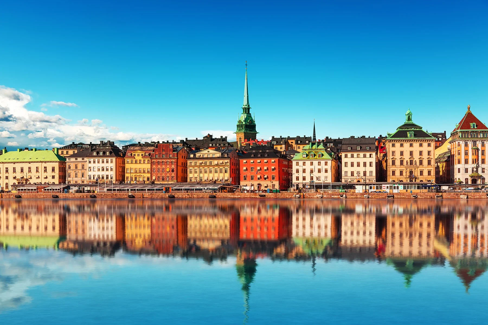

Swedish territories outside the Scandinavian Peninsula were gradually lost during the 18th and 19th centuries, ending with the annexation of present-day Finland by Russia in 1809. The last war in which Sweden was directly involved was in 1814 when Norway was militarily forced into a personal union, which peacefully dissolved in 1905. In 2014, Sweden celebrated 200 years of peace, breaking even Switzerland's record for peace. Sweden maintained an official policy of neutrality during wartime and non-participation in military alliances during peacetime, although Sweden secretly relied on U.S. nuclear submarines during the Cold War. Sweden has since 2008 joined EU battlegroups, provided intelligence to NATO and since 2009 openly moved towards cooperation with NATO. In 2022, Sweden applied for NATO membership and was formally invited to join the alliance at the NATO Summit in Madrid.
During the 17th century, Sweden emerged as a European great power. Before the emergence of the Swedish Empire, Sweden was a poor and sparsely populated country on the fringe of European civilisation, with no significant power or reputation. Sweden rose to prominence on a continental scale during the reign of king Gustavus Adolphus, seizing territories from Russia and Poland–Lithuania in multiple conflicts, including the Thirty Years' War.
During the Thirty Years' War, Sweden conquered approximately half of the Holy Roman states and defeated the Imperial army at the Battle of Breitenfeld in 1631. Gustavus Adolphus planned to become the new Holy Roman Emperor, ruling over a united Scandinavia and the Holy Roman states, but he was killed at the Battle of Lützen in 1632. After the Battle of Nördlingen in 1634, Sweden's only significant military defeat of the war, pro-Swedish sentiment among the German states faded. These German provinces broke away from Swedish power one by one, leaving Sweden with only a few northern German territories: Swedish Pomerania, Bremen-Verden and Wismar. From 1643 to 1645, during the last years of the war, Sweden and Denmark-Norway fought the Torstenson War. The result of that conflict and the conclusion of the Thirty Years' War helped establish postwar Sweden as a major force in Europe.
Sweden is the sixteenth-richest country in the world in terms of GDP (gross domestic product) per capita and a high standard of living is experienced by its citizens. Sweden is an export-oriented mixed economy. Timber, hydropower and iron ore constitute the resource base of an economy with a heavy emphasis on foreign trade. Sweden's engineering sector accounts for 50% of output and exports, while telecommunications, the automotive industry and the pharmaceutical industries are also of great importance. Sweden is the ninth-largest arms exporter in the world. Agriculture accounts for 2% of GDP and employment. The country ranks among the highest for telephone and Internet access penetration.
Trade unions, employers' associations and collective agreements cover a large share of the employees in Sweden. The high coverage of collective agreements is achieved despite the absence of state mechanisms extending collective agreements to whole industries or sectors. Both the prominent role of collective bargaining and the way in which the high rate of coverage is achieved reflect the dominance of self-regulation (regulation by the labour market parties themselves) over state regulation in Swedish industrial relations. When the Swedish Ghent system was changed in 2007, resulting in considerably raised fees to unemployment funds, a substantial decline in union density and density of unemployment funds occurred.
Sweden has many authors of worldwide recognition including August Strindberg, Astrid Lindgren, and Nobel Prize winners Selma Lagerlöf and Harry Martinson. In total seven Nobel Prizes in Literature have been awarded to Swedes. The nation's most well-known artists are painters such as Carl Larsson and Anders Zorn, and the sculptors Tobias Sergel and Carl Milles.
Swedish 20th-century culture is noted by pioneering works in the early days of cinema, with Mauritz Stiller and Victor Sjöström. In the 1920s–1980s, the filmmaker Ingmar Bergman and actors Greta Garbo and Ingrid Bergman became internationally noted people within cinema. More recently, the films of Lukas Moodysson, Lasse Hallström, and Ruben Östlund have received international recognition.
Throughout the 1960s and 1970s, Sweden was seen as an international leader in what is now referred to as the "sexual revolution", with gender equality having particularly been promoted. The early Swedish film I Am Curious (Yellow) (1967) reflected a liberal view of sexuality, including scenes of love making that caught international attention, and introduced the concept of the "Swedish sin" that had been introduced earlier in the US with Ingmar Bergman's Summer with Monika.
The image of "hot love and cold people" emerged. Sexual liberalism was seen as part of modernisation process that by breaking down traditional borders would lead to the emancipation of natural forces and desires.
Sweden has four fundamental laws (Swedish: grundlagar) which together form the Constitution: the Instrument of Government (Swedish: Regeringsformen), the Act of Succession (Swedish: Successionsordningen), the Freedom of the Press Act (Swedish: Tryckfrihetsförordningen), and the Fundamental Law on Freedom of Expression (Swedish: Yttrandefrihetsgrundlagen).
The public sector in Sweden is divided into two parts: the legal person known as the State (Swedish: staten) and local authorities: the latter include regional County Councils (Swedish: landsting) and local Municipalities (Swedish: kommuner). The local authorities, rather than the State, make up the larger part of the public sector in Sweden. County Councils and Municipalities are independent of one another, the former merely covers a larger geographical area than the latter. The local authorities have self-rule, as mandated by the Constitution, and their own tax base. Notwithstanding their self-rule, local authorities are nevertheless in practice interdependent upon the State, as the parameters of their responsibilities and the extent of their jurisdiction are specified in the Local Government Act (Swedish: Kommunallagen) passed by the Riksdag.